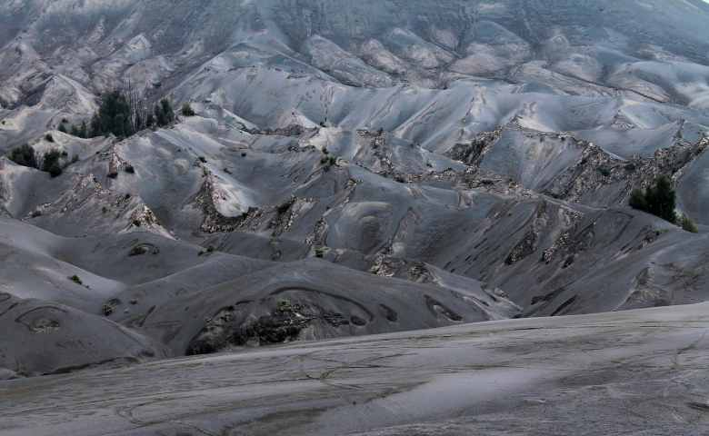

Destinasi Wisata Internasional di Indonesia

Negara kita tercinta, Indonesia, memang memiliki alam
yang sangat indah. Dari Sabang sampai Merauke, kita bisa
dengan mudah menemukan tempat-tempat indah dan memukau.
Sebagai penduduk asli Indonesia, kita sudah sepatutnya
berbangga hati lho Toppers tinggal di negeri yang
dikelilingi beribu – ribu pulau dengan keindahan yang
tiada duanya. Tidak heran kalau banyak turis wisatawan
yang rela berdatangan dari berbagai negara untuk
menikmati objek wisata Indonesia yang populer di
mancanegara.
Pura Besakih

Pura Agung Besakih adalah pura terbesar dan termegah di Bali. Pulau ini terletak di Desa Besakih, Kecamatan Rendang, berada di lereng sebelah barat daya Gunung Agung, gunung tertinggi di Bali.
Pura Agung Besakih memiliki gaya arsitektur yang mengagumkan khas Bali dan berada di ketinggian 915 kaki di kaki Gunung Agung dengan memukau. Bangunan yang dibangun sejak abad ke-10 Masehi ini menjadi pusat kegiatan spiritual Hindu Dharma di Pulau Dewata.
Dengan segala fitur yang dimiliki Pura Besakih, tidak aneh jika situs ini ditetapkan sebagai Situs Warisan Budaya UNESCO sejak selamat dari erupsi Gunung Agung pada tahun 1963.
Akses dari Kota Denpasar untuk mencapai tempat ini berjarak sekitar 25 km ke arah utara dari Kota Semarapura, Kabupaten Klungkung. Perjalanan menuju Pura Besakih melewati panorama Bukit Jambul yang juga merupakan salah satu obyek dan daya tarik wisata Kabupaten Karangasem.
Kepulauan Derawan

Kepulauan Derawan adalah sebuah kepulauan yang berada di Kabupaten Berau, Kalimantan Timur. Di kepulauan ini terdapat sejumlah objek wisata bahari menawan, salah satunya Taman Bawah Laut yang diminati wisatawan mancanegara terutama para penyelam kelas dunia.
Saat pertama kali menginjakan kaki disini, jangan heran bila Toppers akan disambut dengan hamparan pasir putih yang mempesona. Warna airnya yang sangat jernih juga akan bikin kamu betah untuk berlama-lama di kawasan ini. Panorama alam ini menjadi sajian liburan utama bagi wisatawan dalam berkunjung
Faktor lain yang menjadi alasan mengapa kawasan ini wajib untuk dikunjungi, yaitu ekosistem bawah laut dan keasrian alam sekitarnya benar-benar masih sangat terjaga. Wajar jika banyak wisatawan yang datang berbondong-bondong ke tempat ini, baik wisatawan lokal maupun wisatawan internasional.
Pada tahun 2005 pemerintah telah mencoba mendaftarkan kawasan wisata ini ke UNESCO sebagai salah satu situs warisan dunia, bahkan sampai mendapat julukan sebagai “Pristine Island”.
Taman Nasional Way Kambas

Taman Nasional Way Kambas (TNKW) Lampung ditetapkan
sebagai kawasan Taman Warisan ASEAN (ASEAN Heritage
Park) yang ke-36, pada tanggal 25 Juli 2016. Artinya,
Taman Nasional Way Kambas ini menjadi Taman Warisan
ASEAN ke-4 di Indonesia. Terletak di ujung selatan
Sumatera atau 110 km dari Bandar Lampung, TNKW merupakan
salah satu Taman Nasional pertama dan tertua di
Indonesia. Taman Nasional ini menempati 1.300 km persegi
dari hutan dataran rendah pantai sekitar Sungai Way
Kambas di pantai timur Provinsi Lampung. TNWK dikenal
dengan konservasi gajah, karena selain menjadi tempat
perlindungan bagi Gajah Sumatera yang berjumlah sekitar
200, taman nasional ini juga dikenal sebagai tempat
latihan mereka. Way Kambas didirikan oleh pemerintah
Belanda pada tahun 1937 sampai sekarang masih terjaga
sebagai Taman Nasional. Selain konservasi gajah, di sini
juga terdapat konservasi badak sumatera dan ada
fasilitas Rhino Sanctuary. Sayangnya untuk bisa dapat
melihat Badak Sumatera ini, pengunjung harus punya izin
khusus sebelumnya. Pengunjung atau wisatawan biasa tidak
bisa melihat penangkaran alami badak sumatera ini.
Pantai Parai Tenggiri (Bangka Belitung)

Pasti diantara kamu sudah pernah menyaksikan film
populer Laskar Pelangi yang berlatar di Pulang Belitung,
bukan? Selain alur ceritanya yang menarik, lokasi film
ini juga banyak menyita perhatian penonton. Berbeda
dengan pantai lain pada umumnya, Parai Tenggiri memiliki
struktur pantai yang landai dengan air laut berwarna
hijau toska serta pasir putihnya yang lembut. Ombak di
pantai ini juga tenang sehingga menjadi salah satu
alasan yang menarik bagi wisatawan yang senang berenang.
Tidak hanya berenang, kamu juga bisa menikmati aktivitas
memancing, parasailing, menyelam, snorkeling, dan masih
banyak lainnya.
Nusa Dua (Bali)

Pulau Seribu Dewa satu ini memang tidak perlu diragukan
lagi terkait keindahan dan pesonanya dalam memikat para
wisatawan dalam negeri maupun mancanegara. Di Bali, ada
satu tempat wisata yang begitu cantik, yakni Nusa Dua.
Objek wisata pantai ini memiliki pasir putih yang lembut
dan air laut yang berwarna biru jernih. Kamu akan
dimanjakan dengan berbagai fasilitas saat berkunjung ke
tempat satu ini. Mulai dari penginapan dan resort yang
berkelas, restoran, pusat perbelanjaan, hingga aktivitas
berselancar di pantainya.
Gunung Bromo (Jawa Timur)

Kalau kamu pernah berkunjung ke Jawa Timur gak lengkap
rasanya kalau belum menginjakkan kaki ke Gunung Bromo
ini. Salah satu gunung berapi yang masih aktif ini
memiliki pesona khas berupa gurun pasir yang sangat
luat. Meskipun bukan salah satu gunung tertinggi di
Indonesia, namun keindahan Gunung Bromo tidak ada duanya
dan membuat para pengunjung dapat merasakan pemandangan
yang fantastis dan spektakuler. Wisatawan dapat berkuda
dan mendaki gunung bromo untuk menikmati keindahan yang
menawan saat matahari terbit dan terbenam. Bisa jadi
pengalaman secara langsung yang tidak terlupakan lho
Toppers! Dengan keindahan yang menakjubkan itu tidak
heran jika objek wisata di Indonesia satu ini menjadi
para wisatawan mancanegara yang berkunjung ke Indonesia.